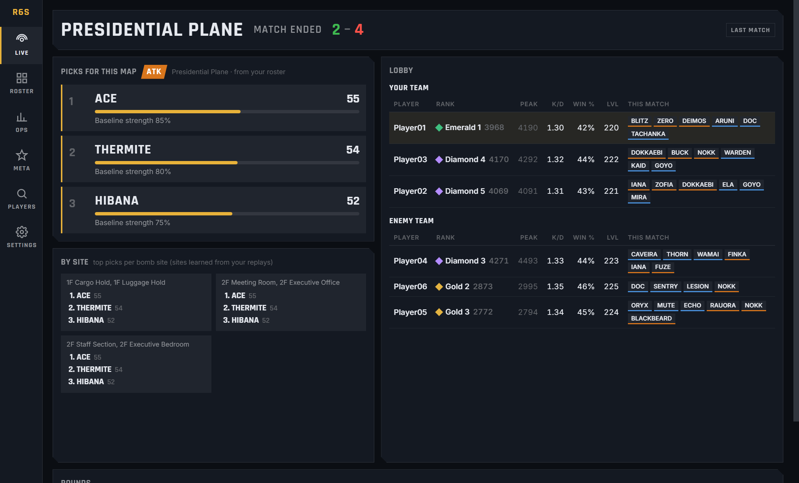
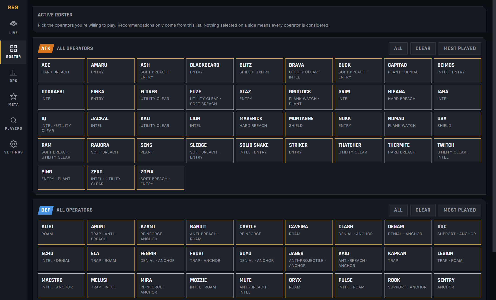
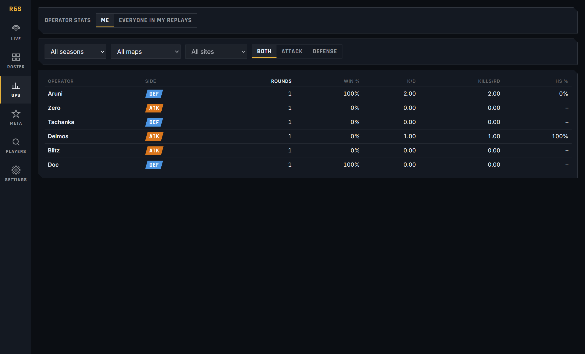
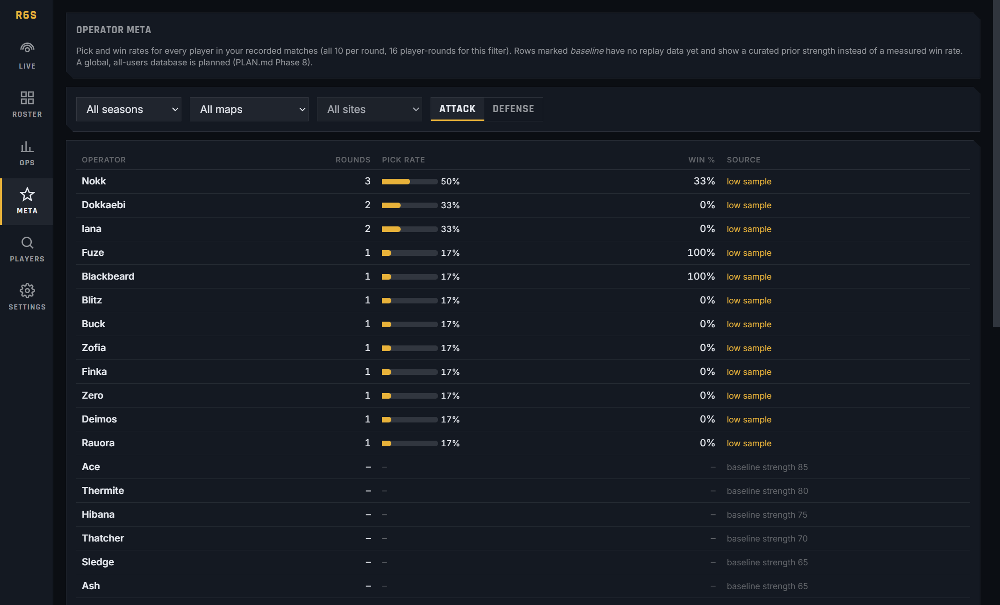
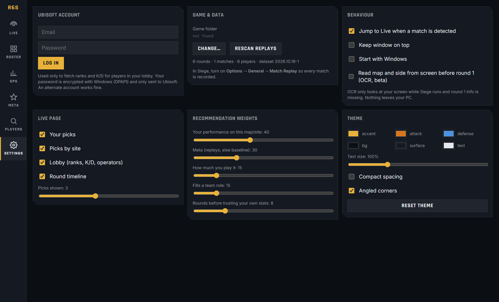

A free, open-source Rainbow Six Siege companion for Windows. No ads and no account system. Open it on your second screen and it fills itself in when your match starts.
Installer (auto-updates) or portable .exe · Windows 10/11 · MIT licensed

Live page, shown with sample data.
Top operators for the map, site and side, scored on your win rate and K/D there, the meta, how much you play them, and what your team is missing. Every pick says why.
Choose the operators you're willing to play. Recommendations only come from that list.
Rank, RP, peak, K/D, win rate and level for all 10 players, plus every operator they've played this match.
Pick and win rates by map, site, side and patch, built from every player in your recorded matches (10 data points per round).
Per-operator stats by map and site, round timelines, and rank history that builds over time.
Each round is parsed in under 100 ms. Ranks for the whole lobby come back in one request. There's nothing to click mid-match.
RainbwStats never reads or modifies game memory and never injects anything into Siege. It uses:



